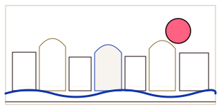 Skyline Rail #01 contemporary-adaptationA modular skyline rail made of varied block and domed profiles over a thin river baseline. Two scene arrangements. Source observations: EG-005 · EG-016Use: Chapter/collection masthead rail; keep adjacent title area clear. Minimum: 200 px wide; strokes >=1.25 px.Open / download SVG
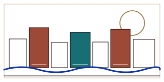 Skyline Rail #02 contemporary-adaptationA modular skyline rail made of varied block and domed profiles over a thin river baseline. Two scene arrangements. Source observations: EG-005 · EG-016Use: Chapter/collection masthead rail; keep adjacent title area clear. Minimum: 200 px wide; strokes >=1.25 px.Open / download SVG
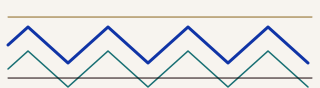 River Chevron #01 contemporary-adaptationAlternating angular or curved water courses with a single upper rule. Source observations: EG-005 · EG-010Use: Section divider; avoid text overlay. Minimum: 160 px wide; strokes >=1.25 px.Open / download SVG
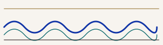 River Chevron #02 contemporary-adaptationAlternating angular or curved water courses with a single upper rule. Source observations: EG-005 · EG-010Use: Section divider; avoid text overlay. Minimum: 160 px wide; strokes >=1.25 px.Open / download SVG
Lotus Register #01 contemporary-adaptationOpen flower and closed-bud silhouettes alternate along a shared baseline; simplified botanical geometry. Source observations: EG-005 · EG-009Use: Narrow chapter spine or edge band, below content. Minimum: 240 px wide; strokes >=1.2 px.Open / download SVG
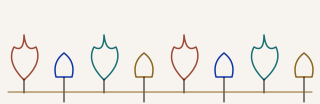 Lotus Register #02 contemporary-adaptationOpen flower and closed-bud silhouettes alternate along a shared baseline; simplified botanical geometry. Source observations: EG-005 · EG-009Use: Narrow chapter spine or edge band, below content. Minimum: 240 px wide; strokes >=1.2 px.Open / download SVG
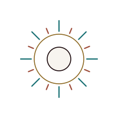 Sun Medallion #01 contemporary-adaptationSixteen radial rays around a paired ring and quiet center; two ray lengths. Source observations: EG-005 · EG-004Use: Isolated section marker or large cover focal; not a logo claim. Minimum: 48 px diameter; strokes >=1.5 px.Open / download SVG
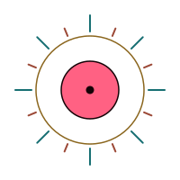 Sun Medallion #02 contemporary-adaptationSixteen radial rays around a paired ring and quiet center; two ray lengths. Source observations: EG-005 · EG-004Use: Isolated section marker or large cover focal; not a logo claim. Minimum: 48 px diameter; strokes >=1.5 px.Open / download SVG
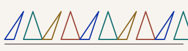 Triangle Alternation #01 contemporary-adaptationAlternating upward/downward triangles on a fixed baseline, with optional sparse filled cells. Source observations: EG-009Use: Poster edge register; keep off small controls. Minimum: 180 px wide; strokes >=1.25 px.Open / download SVG
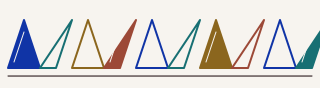 Triangle Alternation #02 contemporary-adaptationAlternating upward/downward triangles on a fixed baseline, with optional sparse filled cells. Source observations: EG-009Use: Poster edge register; keep off small controls. Minimum: 180 px wide; strokes >=1.25 px.Open / download SVG
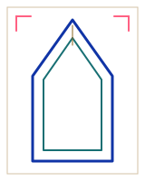 Faceted Portrait Aperture #01 contemporary-adaptationTwo pointed/faceted nested outlines define a replaceable image aperture. Source observations: EG-013 · EG-036Use: Editorial portrait crop; full image route and focal control remain external. Minimum: 160 px tall; inner clear area >=55% width.Open / download SVG
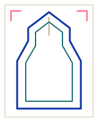 Faceted Portrait Aperture #02 contemporary-adaptationTwo pointed/faceted nested outlines define a replaceable image aperture. Source observations: EG-013 · EG-036Use: Editorial portrait crop; full image route and focal control remain external. Minimum: 160 px tall; inner clear area >=55% width.Open / download SVG
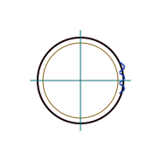 Blank Postmark Ring #01 contemporary-adaptationConcentric blank rings, short cancellation strokes and axis cross; no fake date/text. Source observations: EG-002 · EG-011Use: Archive record detail beside verified metadata only. Minimum: 72 px diameter; strokes >=1.4 px.Open / download SVG
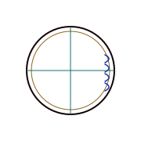 Blank Postmark Ring #02 contemporary-adaptationConcentric blank rings, short cancellation strokes and axis cross; no fake date/text. Source observations: EG-002 · EG-011Use: Archive record detail beside verified metadata only. Minimum: 72 px diameter; strokes >=1.4 px.Open / download SVG
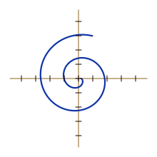 Diagram Spiral Axes #01 contemporary-adaptationExplicit sampled Archimedean spiral, orthogonal axes and five unit ticks per side. Source observations: EG-011Use: Lineage/acquisition diagram accent; pair with real labels outside SVG. Minimum: 110 px square; stroke >=1.3 px.Open / download SVG
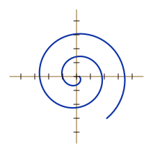 Diagram Spiral Axes #02 contemporary-adaptationExplicit sampled Archimedean spiral, orthogonal axes and five unit ticks per side. Source observations: EG-011Use: Lineage/acquisition diagram accent; pair with real labels outside SVG. Minimum: 110 px square; stroke >=1.3 px.Open / download SVG
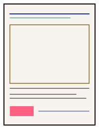 Architectural Ruled Frame #01 contemporary-adaptationNested page frame, short header rules, media window, caption rules and a small labelled bar. Source observations: EG-006 · EG-013Use: Chapter opener or source sheet; slots remain editable/replaced. Minimum: 200 x 260; content inset >=12 px.Open / download SVG
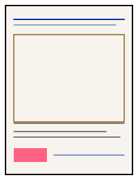 Architectural Ruled Frame #02 contemporary-adaptationNested page frame, short header rules, media window, caption rules and a small labelled bar. Source observations: EG-006 · EG-013Use: Chapter opener or source sheet; slots remain editable/replaced. Minimum: 200 x 260; content inset >=12 px.Open / download SVG
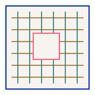 Grille Aperture #01 contemporary-adaptationOrthogonal bars around a clear central square opening; spacing presets 20/28. Source observations: EG-036 · EG-013Use: Large media aperture or background panel only; do not obscure image details. Minimum: 160 px square; central aperture >=44 px.Open / download SVG
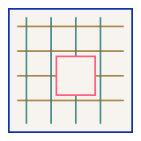 Grille Aperture #02 contemporary-adaptationOrthogonal bars around a clear central square opening; spacing presets 20/28. Source observations: EG-036 · EG-013Use: Large media aperture or background panel only; do not obscure image details. Minimum: 160 px square; central aperture >=44 px.Open / download SVG
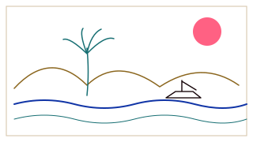 Thin Scene Lines #01 contemporary-adaptationThin hills, two water courses, palm and a simple boat silhouette. Source observations: EG-009 · EG-005Use: Wide editorial scene field; standalone illustration, no claim of a depicted place. Minimum: 320 x 180; preserve clear margins.Open / download SVG
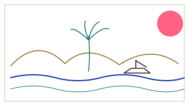 Thin Scene Lines #02 contemporary-adaptationThin hills, two water courses, palm and a simple boat silhouette. Source observations: EG-009 · EG-005Use: Wide editorial scene field; standalone illustration, no claim of a depicted place. Minimum: 320 x 180; preserve clear margins.Open / download SVG
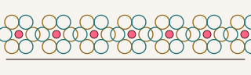 Rosette Border #01 contemporary-adaptationRepeated 6- or 8-lobed circle rosettes with alternating ring colors and a baseline. Source observations: EG-004 · EG-005Use: Optional border under large titles; two color/scale arrangements. Minimum: 240 px wide; strokes >=1.2 px.Open / download SVG
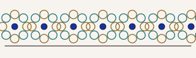 Rosette Border #02 contemporary-adaptationRepeated 6- or 8-lobed circle rosettes with alternating ring colors and a baseline. Source observations: EG-004 · EG-005Use: Optional border under large titles; two color/scale arrangements. Minimum: 240 px wide; strokes >=1.2 px.Open / download SVG
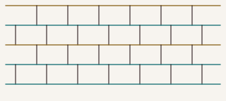 Brick Cutstone Courses #01 contemporary-adaptationStaggered rectangular courses, with alternate bond offsets; diagrammatic not site-specific. Source observations: EG-005 · EG-036Use: Panel background behind image only or technical section rail. Minimum: 200 px wide; strokes >=1.2 px.Open / download SVG
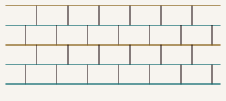 Brick Cutstone Courses #02 contemporary-adaptationStaggered rectangular courses, with alternate bond offsets; diagrammatic not site-specific. Source observations: EG-005 · EG-036Use: Panel background behind image only or technical section rail. Minimum: 200 px wide; strokes >=1.2 px.Open / download SVG
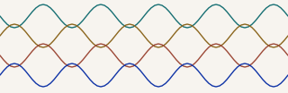 Woven Reed Fibres #01 contemporary-adaptationFour sampled sinusoidal strands with two amplitude/period pairs; illustrative fibers, not interlace. Source observations: EG-009 · EG-005Use: Peripheral material strip; not a verified seamless pattern. Minimum: 240 px wide; strokes >=1.2 px.Open / download SVG
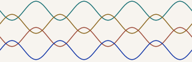 Woven Reed Fibres #02 contemporary-adaptationFour sampled sinusoidal strands with two amplitude/period pairs; illustrative fibers, not interlace. Source observations: EG-009 · EG-005Use: Peripheral material strip; not a verified seamless pattern. Minimum: 240 px wide; strokes >=1.2 px.Open / download SVG
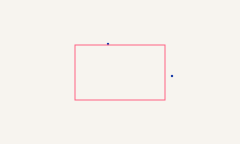 Inkprint Stipple #01 contemporary-adaptationDeterministic sparse dot field fades toward quiet center; two dot scales. Source observations: EG-004 · EG-011Use: Large bounded edge atmosphere. Keep text window clear. Minimum: 240 x 144; dots >=1.2 px.Open / download SVG
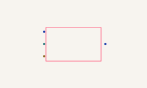 Inkprint Stipple #02 contemporary-adaptationDeterministic sparse dot field fades toward quiet center; two dot scales. Source observations: EG-004 · EG-011Use: Large bounded edge atmosphere. Keep text window clear. Minimum: 240 x 144; dots >=1.2 px.Open / download SVG